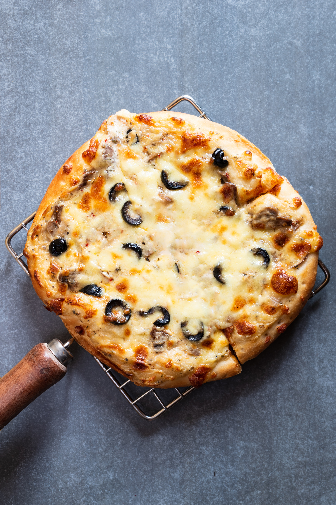

Simple Vegan Pizza

Description
Here's something for non-meat eaters!
A delicious vegan pizza with a non-dairy alternative, and plenty of healthy veggies.
Enjoy!
- cal/serv: 311.5
- yields: 1/4 recipe
- prep time: 15min
- total time: 30min
Ingredients
- 1/2 batch of homemade pizza dough or 1 store-bought crust
- ¼ cup pizza sauce (65 ml)
- ¼ onion, sliced
- ½ batch of vegan mozzarella
- 2–4 mushrooms, sliced
- ¼ cup black olives (40 g), chopped
- ¼ tsp dried oregano
Steps
- Preheat the oven to 450ºF or 230ºC. Lightly grease
a pizza pan or a baking sheet with olive oil or
nonstick spray. Set aside.
- If you’re using a store-bought pizza crust, place it onto
the prepared baking sheet or pizza pan.
- Brush your pizza with some extra virgin olive oil. This
step is optional, but it prevents the filling from
making your pizza crust soggy.
- Spread the pizza sauce onto the pizza crust.
- Drop 1 to 2 tablespoon-sized balls of vegan
mozzarella onto the crust.
- Top with the veggies (onion, mushrooms, and olives),
and add the dried oregano.
- Bake for about 15-20 minutes, or until golden brown.
- Slice and serve immediately
- Keep the leftovers covered in the fridge for up to 3 days.
Baked pizza slices can be frozen for up to 3 months.